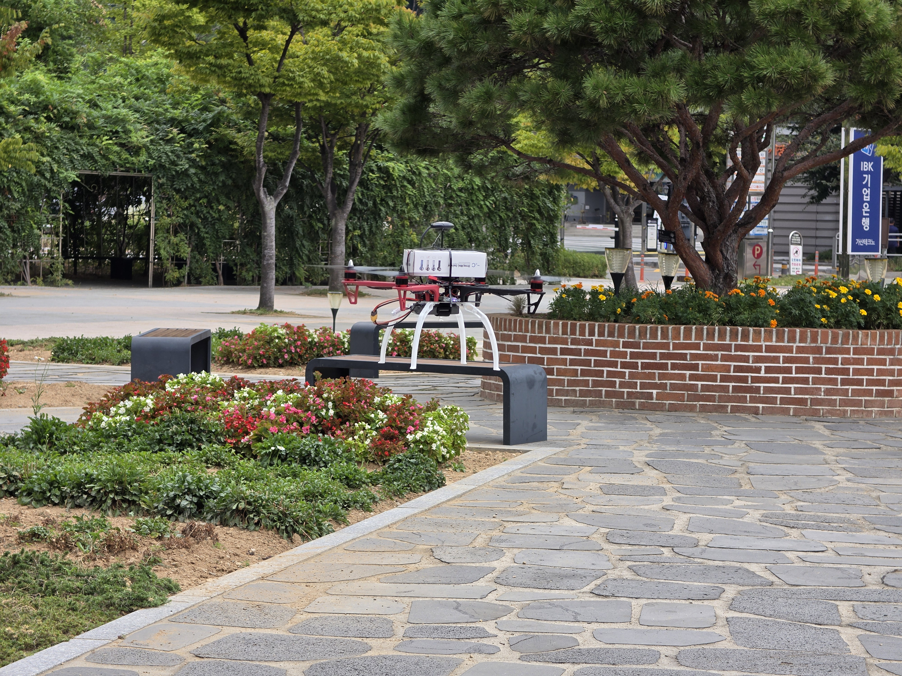

YOLOX로 열화상 영상 속 객체 탐지
ONBOARD AI / DRONE / OBJECT DETECTION & TRACKING
진행 중ARGUS 온보드 AI 드론 객체 탐지 및 추적 시스템
ARGUS AI-powered Real-time Ground Object UAV Surveillance
열화상 영상에서 지상 객체를 탐지하고, 선택한 대상을 드론이 따라가도록 하는 시스템을 개발하고 있습니다. Hailo NPU에서 객체 탐지를 수행하고, 탐지 결과를 추적과 PX4 비행 제어에 연결하도록 설계했습니다.
- 기간
- 2026.09–진행 중
- 팀
- ARGUS 6인 팀
- 역할
- 팀장
YOLOX 학습과 Hailo NPU 적용
개발 일정과 시스템 통합 관리 - 주요 구성
- Raspberry Pi 5 / Hailo NPU / LWIR / PX4

01 / BACKGROUND
온보드 처리가 필요한 이유
지상 장비와의 통신에 의존하지 않고 기체 내부에서 영상을 처리하는 것이 목표입니다. 어두운 환경에서도 대상을 관측할 수 있도록 장파장 적외선(LWIR) 카메라를 사용하고, 객체 탐지부터 추적과 추종 판단까지 기체에서 수행하도록 설계했습니다.
연속 영상에서 같은 대상 추적
대상 위치에 따라 이동 속도와 기체 회전(yaw) 명령 계산
02 / SYSTEM
장치별 역할과 연결 구조
Raspberry Pi 5는 영상 전처리와 대상 추적, 추종 판단을 맡고, Hailo NPU는 YOLOX 추론을 수행하도록 역할을 나눴습니다. 추종 명령은 PX4 비행 제어기에 전달하고, 지상 통제기에서는 영상과 상태를 확인하며 추종 시작과 중단을 요청하는 구조입니다.

03 / PIPELINE
영상에서 추종 명령까지
오래된 영상 때문에 제어가 늦어지지 않도록 최신 프레임을 우선 처리하는 구조로 설계했습니다. 탐지 결과는 대상 추적에, 추적 결과는 이동 속도와 회전 명령을 계산하는 데 사용하도록 모듈 사이의 전달 데이터를 정했습니다.

04 / FAIL-SAFE
대상 소실과 사용자 개입 대응
대상을 놓치면 자동 추종을 중단하고 위치 유지(Hold)를 요청하도록 설계했습니다. 추종을 재개하기 전에는 비행 제어기의 상태와 대상 재탐지 여부, 재개 조건을 확인하도록 했습니다. 사용자 수동 개입은 대상 소실과 구분하며, 현재 상태와 관계없이 자동 추종을 해제하는 조건으로 두었습니다.

05 / VALIDATION
검증 계획
영상 처리 지연과 기체 내 구동 안정성을 확인한 뒤, 시뮬레이션과 실기체에서 추종 및 중단 동작을 검증할 계획입니다.
- 탐지와 응답탐지 성능과 영상 입력부터 제어 명령까지의 지연시간
- 기체 내 구동NPU 처리 속도, 소비 전력과 온도
- 비행 연동소프트웨어 비행 시뮬레이션(SITL)과 실기체의 제어 반응
- 추종 중단과 재개대상 소실, 수동 개입, 재탐지 상황의 동작